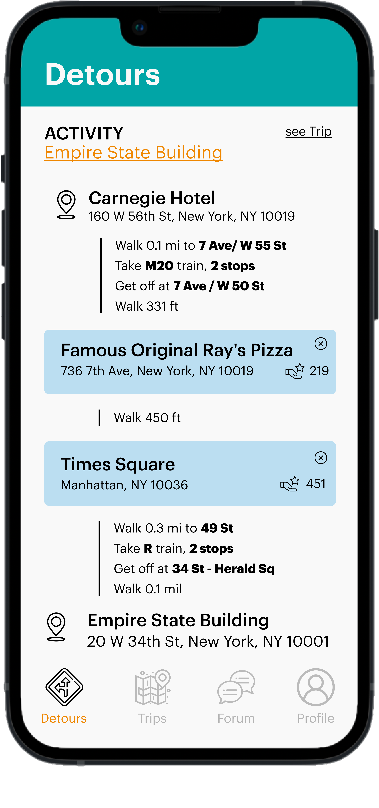
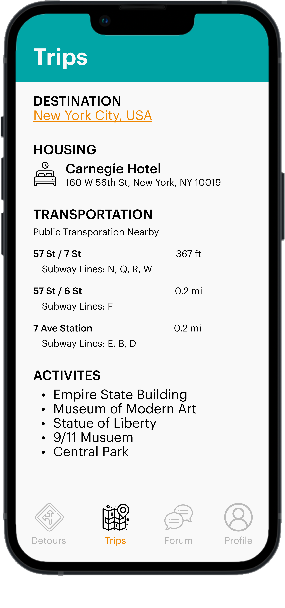
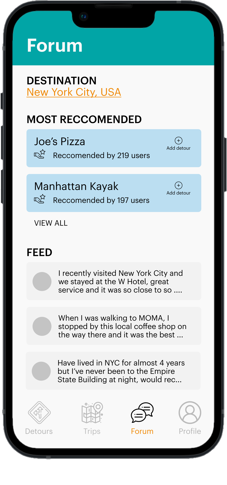

Trip planning, made easier
Planning a trip can be a daunting and overwhelming task due to the large amounts of information on the internet. My teammates and I wanted to find a data driven solution that focused on a specific part of the trip planning process.
After preliminary research we wanted to investigate:
How might we utilize public transportation during the trip planning process?
ROLES
Reseracher
Design Lead
Project Manager
CLIENT
Course Project for User Centered Research and Evaluation
TEAM
Amelia Austin
Rahul Ravula
TIME
March 2022 -
May 2022
01
Executive Summary
Trip planning is an overwhelming process and users are unable to make educated decisions about where to go, what to eat, and where to stay due to many constraints.
Mobile application that utilize public transportation, as a cost efficient transportation method, to create an itinerary that is enhanced by “detours” from other travelers.
02
Background Research
RESEARCH METHODS: Secondary Research, Surveys
To kick off our research process we wanted to get a general understanding of the trip planning atmosphere. Each of us conducted 1 experimental method where we conducted own our trip planning. As well as 2 informational methods, such as using travel forum blogs and travel guidebooks, reading research articles on trip planning, and using existing travel planning applications.
Our biggest insights from our preliminary research were:
- People often use recommendations from friends and/or family members to decide what activities to do
- Trip Report Collections on Travel Forums are public can be found online; they provide a first hand account of peoples experiences
After conducting online research, we wanted to get insight into our target users. We recruited participants to take our survey and found that the biggest obstacles during the trip planning process were:
- Indecisiveness and activities
- Trustworthiness of online information
03
Synthesis, Ideation, and Define
Once we had a general understanding of our problem space, we moved onto synthesizing our findings, brainstorming ideas, and defining our problem statement.
To populate some ideas, we performed a reframing activity of our choice: Reverse Assumptions. We decided to use the method of Reverse Assumptions because we wanted to challenge the status quo of our current problem statement and push the norms of how people normally plan trips.
After writing down our reserve assumptions and grouping them into common themes, we found that our key takeaways were:
- Method of cost-saving during travel is utilizing public transportation
- Trip planning does not have to be planned out beforehand, spontaneity can result in some good memories
After looking at takeaways, we defined our problem statement as: How might we utilize public/ share resources while planning trips?
04
Contextual Inquiry
RESEARCH METHODS: Directed Storytelling, Interpretation Notes, Affinity Diagram, Empathy Map, Customer Journey Map
After defining our problem space to a specific aspect of the trip planning process, we wanted to dive deeper into this specific space with a contextual research method of our choice: Directed Storytelling. Each of us conducted a directed storytelling with a participant who had traveled recently and used public transportation on their trip.
In order to analyze our findings, we each created interpretation notes and use those as the foundation for our affinity diagram.
Our affinity diagram helped us zoom out and see larger themes present in our problem space. We wanted to model our findings in the form of an Empathy map and Customer Journey map.


After taking a step back and looking at all of the information we had collected, our biggest insights were:
- People prefer to use public transportation if city planning is robust and has good coverage
- When people realize public transportation stops align with their itinerary, they are more likely to use public transit
- People who stay near public transportation stops can leverage the transportation network to plan their trip
- If people perceive public transportation as the best mode, they will feel more independent while using it
- In cities where public transportation apps are comparable to private ridesharing apps, people feel more confident in the transportation and are more willing to use it
05
Speed Dating
RESEARCH METHODS: Storyboards, Speed Dating
We were then able to transform our insights from our contextual inquiry into user wants and needs that we could create storyboards from and test iteratively. We each created 3 storyboards for a specific user need that increased in levels of comfort. For my comfort aspect, I chose privacy.
Each of us tested all 9 of our storyboards with a member of our target audience and we found that:
- Online community forums serve as a trustworthy sources of activities
- Detours were welcomed if users did not have a reservation or time constraints
- Proximity and cost were large factors when deciding on transportation
- Detailed information about trip is necessary when using public transportation
06
Prototyping a Solution
Once we had a clear idea of the user needs and wants after testing our storyboard, I started to create a mobile application that highlighted features such as a community forum, itinerary with detours, as well as detailed information about transportation routes.
|  |
Feature: Detours in Itinerary, generated from recommendations
Addressing User Need:
|
|  |
Feature: Detailed information about public transportation
Addressing User Need:
|
|  |
Feature: Feature: Community Forum to share trips
Addressing User Need:
|
Note: We were explicity told not to create a hi-fi interactive prototype for this project, because we wanted to focus on the user research aspect of the design process.
07
Conclusion
This was my first project that explicitly focused on user research. Being able to experience and conduct so many different user research methods, ranging from evaluative and generative was exciting. I think my favorite research method was Speed Dating, because it was both evaluative and generative in our process. It allowed us to create and test ideas in a way that was low cost but produced essential insights.
This project has bolstered my value of data driven design and I will always explore user research before I start ideating any of future projects.